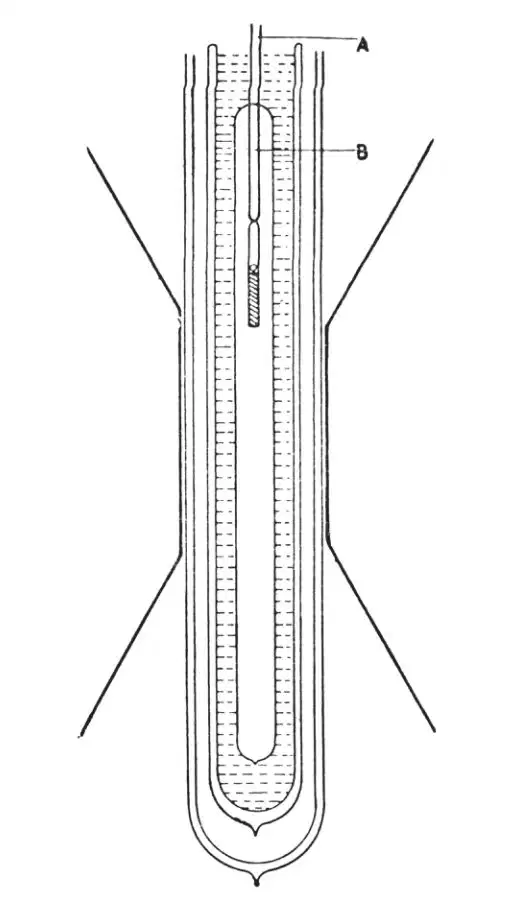
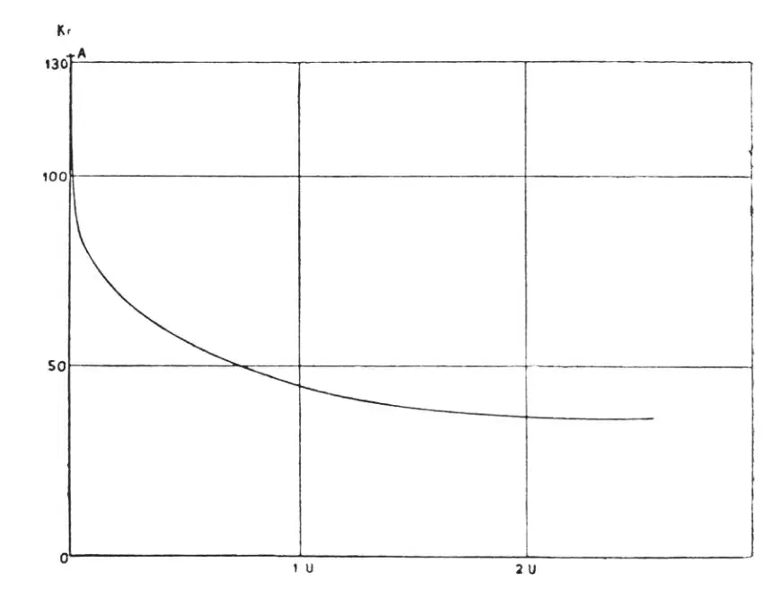

英文
英文万德·约翰尼斯·德哈斯
编者按
荷兰莱顿大学的物理学家万德·约翰尼斯·德哈斯在下文中描述了他最近利用“绝热退磁”法达到极低温的实验。在这一方法中，先使一种材料在强磁场中被磁化，然后突然去除磁场，则材料会变得更冷。德哈斯介绍了他用氟化铈所作的实验。最初实验，温度只能达到0.27 K，近来德哈斯领导的团队已经把温度降低到0.085 K。德哈斯认为，用这一装置还可以得到更低的温度。在给出这些极限值之后他注意到，在这么低的温度之下，当前的测温手段都已经达到了它们的极限，下一步的进展要求适用于很低温度的温度计。 英文
1926年德拜指出，被磁化了的物体在绝热去磁时其温度一定会降低。吉奥克在1927年也提出了同样的观点；在更早之前，朗之万就曾提到氧有这样的性质。德拜以硫酸钆为例，对预期效应进行了计算。他的计算基于以下几个原则：一种可磁化的物体中含有大量小的单元磁体。当该物体被磁化时，这些磁体会发生定向排列。属于这一有序的那部分熵会减少，而该过程被认为是一个等熵的过程，与统计运动相关的那部分熵就一定会增加。反过来，当单元磁体的无序度由于退磁而增加时，与磁化有关的那部分熵就会增加，而与统计运动相关的那部分熵则会减少，从而使物体的温度降低。 英文
如果我们想得到显而易见的结果，就需要特别注意以下几点：（1）单元磁体彼此之间不应该存在直接的相互作用（非铁磁体）；（2）由于第（1）点的限制，单元磁体应具有尽可能大的磁矩；（3）这种效应在低温时将达到最大，因为这时与磁化对应的那部分熵变得与另一部分熵大小差不多，与此同时，有序剧烈地增加。 英文
为了获得极低的温度，在实验中必须保证完全切断与环境之间通过辐射或传导而进行的热交换。在我们的实验中这个条件是满足的。被冷却的物质同时也被用作温度计。 英文
实验是用乌得勒支大学的克拉默斯教授建议的三氟化铈（一种稀土弱顺磁盐）（参见《莱比锡演讲》，1933年）进行的。图1简单画出了我们所用的实验装置。棒A固定在一平衡物上。它连着一个小的细长杜瓦瓶，杜瓦瓶中的小试管装有三氟化铈，小试管由中间导管B悬挂着。整个装置被置于卡默林·昂内斯实验室的大型电磁铁的两磁极之间，并确保顺磁盐样品处于H.dH/dx最大值的位置（x为垂直坐标）。棒A的最下端以及整个小杜瓦瓶都浸没在沸点为1.26 K的液氦中。三氟化铈的热绝缘非常好，以至于4～5个小时之后只有极少量的这种具有极低热容量（与T3成反比）的盐被冷却到了1.26 K。 英文

图1 英文
由于这种盐是其自身温度的指示器，我们知道最终被冷却到了1.26 K。力K=M.dH/dx将顺磁体吸入磁场中（强度为31,000高斯），其中M是顺磁体的总磁矩。由于M=φ(H, T)，且H是保持不变的，我们很容易通过测量K而看出T是何时变为恒定的。 英文
一旦满足了以上所说的情况，就通过降低磁场给顺磁体退磁，在头几次实验中把磁场降至2,700高斯，而在以后的实验中降到了1,000或500高斯。 英文
在这种弱场中，测量了作为时间的函数的力K。这样，我们得到了图2所示的曲线。 英文

图2 英文
曲线上的A点对应于最低温度时力的值，而长时间后的渐近线趋近于温度为1.26 K时力的值。曲线在开始时急剧下降是因为在抽成真空的小杜瓦瓶中，为了保证热接触而有意留下了少量的氦（10－7 mm）。这些氦气在放出凝聚热的过程中被凝聚。当氦气的压强更低时，曲线具有不同的形式，随时间而升温的速度十分缓慢。低温被维持在阱里。这时的真空实际上变成绝对真空，而且不再有热传输了。 英文
力正比于磁矩，因而我们唯一需要确定的是这些磁矩对应什么温度。在7.2 K到1.3 K之间，温度与磁矩的关系已经确定了。代表这一关系的曲线被线性外推，尽管这样做给出的磁矩随时间增加的幅度比实际曲线上增加的幅度还要大一些。这就是为什么我们只能给出所能达到的温度的上限的原因。 英文
最初的实验是在今年3月和4月用氟化铈进行的，得到的温度上限为0.27 K。较近期实验是用硫酸乙基镝进行的，给出的温度上限为0.17 K。最后一次实验是在今年7月用硫酸乙基铈进行的，给出的温度上限为0.085 K。 英文
用同样的实验装置有可能达到更低的温度。正确地选用顺磁物质将决定未来的结果。我确信用上述装置可以达到理论的极限。 英文
目前人们已经可以用在极低压强下沸腾的液氦达到最低的温度了。这一方法的最终结果很明显地取决于所用泵的排量，以及热绝缘的理想程度。 英文
1921年10月，卡默林·昂内斯利用这种方法达到了0.82 K的低温。基桑使用的扩散泵排量是卡默林·昂内斯所用的15倍。他在1929年实现了0.71 K的低温。不过，这个方向的研究已经很难再有更大的进展了。 英文
温度的概念是以理想气体的性质为基础的。我们是借助氦温度计（已进行过多次校正）来测定温度的。在我看来，在最近所达到的极低温度下，没有一种气体温度计的测温方法是可行的。 英文
基于其他过程的温标必须拟合到绝对温标；为此目的，只有磁学标度是可用的。 英文
正如在气体测温术所做的那样，我们必须找到某种在相当宽的温度范围内呈现同一行为的物质；然后，已经高度发展了的理论将使我们能够用磁测温术得到与气体测温法同样精确的温度。 英文
但是我们必须有所保留，因为在极低的温度下，所使用的物质可能会变成铁磁性或者表现出新型的铁磁性。在这种情况下，就很难谈什么温度了。 英文
另一个巨大的困难是：如果我们希望利用磁学方法来冷却其他物质，那么热接触就变成了非常紧迫的问题。辐射是可忽略的，而且氦的蒸汽压也变得非常小，以至于几乎不能考虑通过气态氦进行热接触。 英文
实验是在实验室管理员威尔斯玛博士的协作下进行的，我要对他的帮助和诸多建议表示最真诚的谢意。我还要感谢乌得勒支的克拉默斯教授在理论方面所提供的有价值的帮助。 英文
（王耀杨 翻译；陶宏杰 审稿）